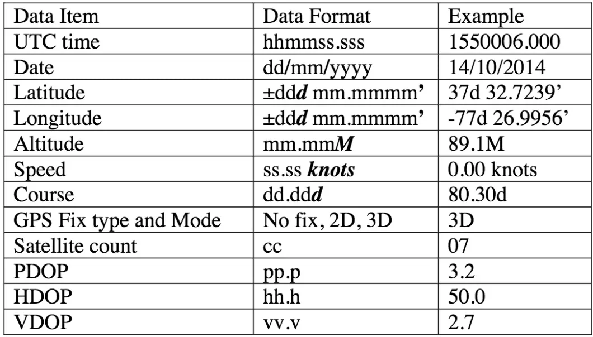
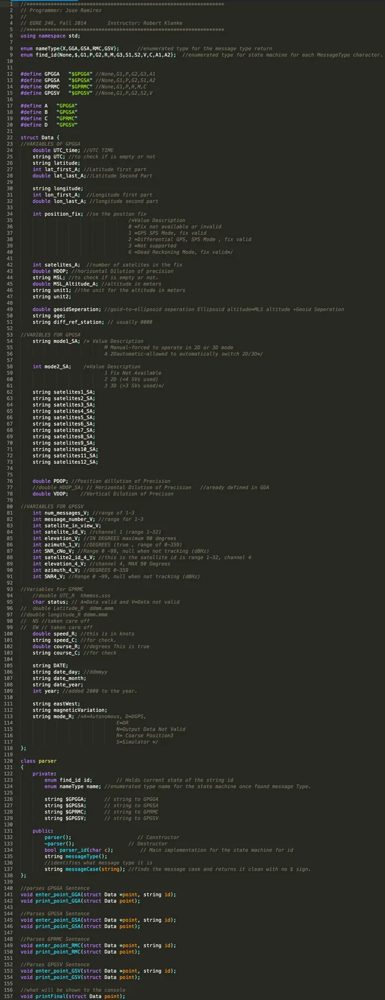
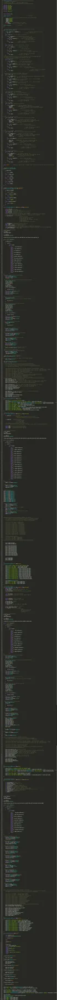
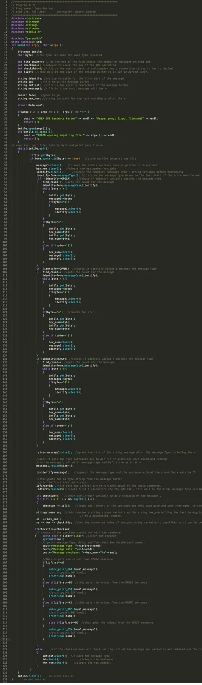
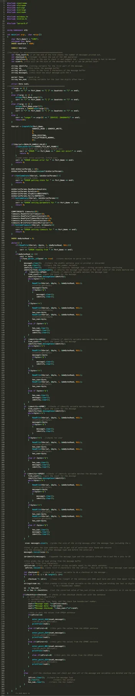
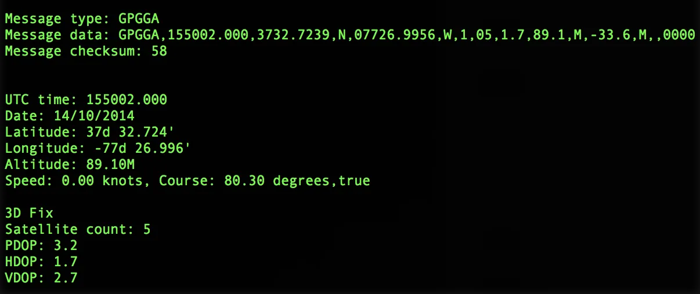
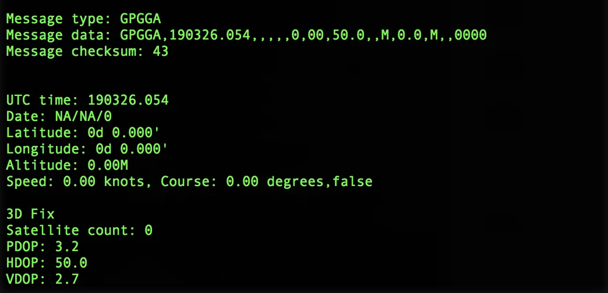
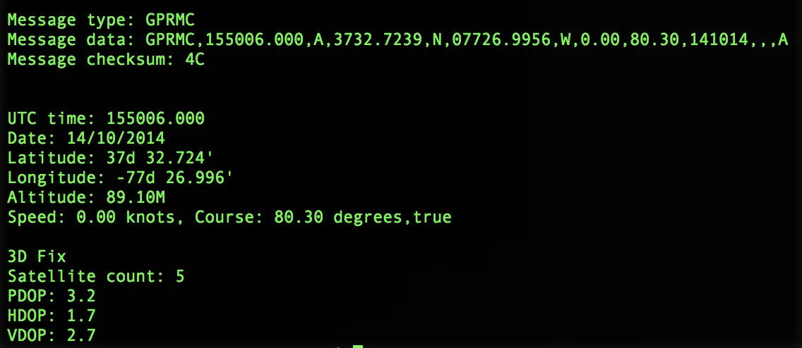
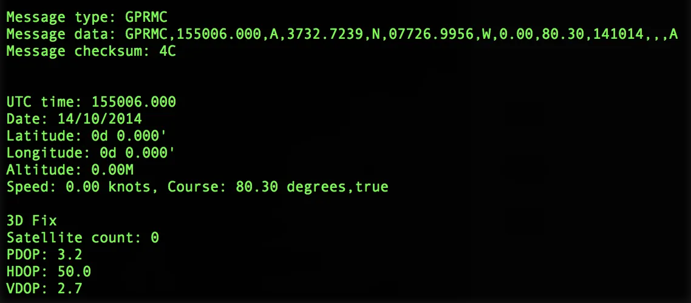

NMEA GPSParser
Advanced Programming Using C++ is a course taught at Virginia Commonwealth University as part of the Computer Engineering curriculum. One of the course assignments was to create a C++ program that parses NMEA messages and displays them to the console in a specified order.
- C++
- State machine
- RS-232 serial
- .log file parsing
- Makefile
$GPGGA,155002.000,3732.7239,N,07726.9956,W,1,05,1.7,89.1,M,-33.6,M,,0000*58 $GPGSA,A,3,17,06,28,02,24,,,,,,,,3.2,1.7,2.7*3E $GPRMC,155002.000,A,3732.7239,N,07726.9956,W,0.00,80.30,141014,,,A*48 $GPGGA,155003.000,3732.7239,N,07726.9956,W,1,05,1.7,89.1,M,-33.6,M,,0000*59 $GPGSA,A,3,17,06,28,02,24,,,,,,,,3.2,1.7,2.7*3E $GPGGA,190326.054,,,,,0,00,50.0,,M,0.0,M,,0000*43 // no fix $GPRMC,155006.000,A,3732.7239,N,07726.9956,W,0.00,80.30,141014,,,A*4C
Same sentence, different state.
The data in the NMEA GPS sentences is contained in comma-separated fields. While the number of fields in each message type and their meanings are fixed, whether or not they actually contain data varies with the state of the GPS receiver.
With a valid GPS fix, a GPGGA message may look like this:
$GPGGA,155002.000,3732.7239,N,07726.9956,W,1,05,1.7,89.1,M,-33.6,M,,0000*58
Without a GPS fix, a GPGGA message may look like this:
$GPGGA,190326.054,,,,,0,00,50.0,,M,0.0,M,,0000*43
Data gathered, output format.

- UTC time
- 155006.000
- Date
- 14/10/2014
- Latitude
- 37d 32.7239'
- Longitude
- -77d 26.9956'
- Altitude
- 89.1 M
- Speed
- 0.00 knots
- Course
- 80.30°, true
- 3D fix satellites
- 5
- PDOP
- 3.2
- HDOP
- 1.7
- VDOP
- 2.7
- Checksum
- Hex, after *
Program files




Using the log data below
$GPGGA,190326.054,,,,,0,00,50.0,,M,0.0,M,,0000*43 $GPRMC,155006.000,A,3732.7239,N,07726.9956,W,0.00,80.30,141014,,,A*4C $GPGGA,155002.000,3732.7239,N,07726.9956,W,1,05,1.7,89.1,M,-33.6,M,,0000*58 $GPRMC,155006.000,A,3732.7239,N,07726.9956,W,0.00,80.30,141014,,,A*4C




How the data is read from an NMEA GPS
NMEA is an acronym for the National Marine Electronics Association. It existed well before Global Positioning Systems (GPS) were invented. Today, in the world of GPS, NMEA is a standard data format supported by all GPS manufacturers, much like ASCII is the standard for digital computer characters in the computer world. (2)
NMEA GPS sentences consist of data in ASCII form: each byte of information that is output corresponds to an ASCII character. NMEA sentences are typically transmitted over an RS-232 serial link and are received one byte at a time. For the assignment, we read the NMEA GPS sentences from a file, one byte at a time, and tested with an actual NMEA GPS at the end. It's simply a matter of adding another file that allows the program to take its input from a serial link.
The data
A valid sentence starts with a ‘$’ character. After the ‘$’, there is a 5-character sequence starting with “GP” and ending with three characters that specify the “type” of the message. After the message type, the sentence includes a variable number of characters that contain the actual message data. After the message data, the sentence contains a ‘*’ character signifying the end of the data. Following the ‘*’, there are two ASCII characters which specify the checksum of the message in hexadecimal format. After the two checksum characters, the next character should be a ‘$’ signifying the start of the next message. (1)
Read more, run it yourself.
- About NMEA sentences: http://aprs.gids.nl/nmea/
- What is NMEA GPS data: http://gpsworld.com/what-exactly-is-gps-nmea-data/

R.A.M.S →